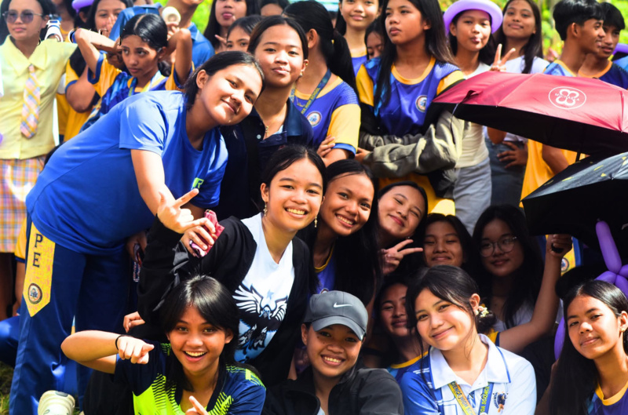
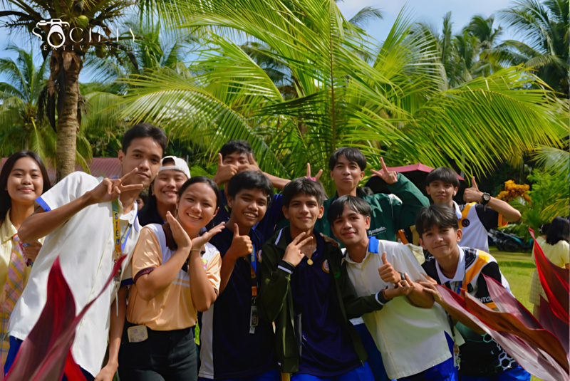

With an active support system for development, focusing on SCIENCE, TECHNOLOGY, and MATHEMATICS. Check out our juniors in action!
Academic Track strands: Science, Technology, Engineering and Mathematics (STEM) and Accountancy and Business Management (ABM). Preparing for college and careers—seniors leading the way!
Our students shine in practical applications—feel the innovation in SciMath and business seminars.
Senior high stars perform experiments that wow—blending science with showmanship for memorable learning.
ABM students network and innovate at expos—gaining real-world business insights for future success.